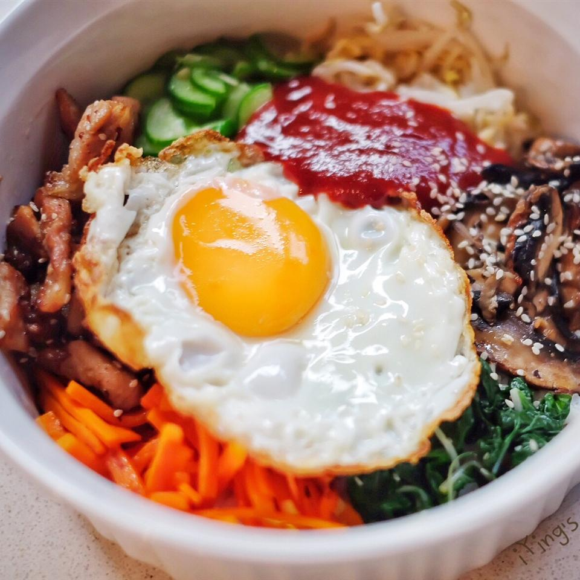

Bibimbap

Description
This recipe of a Korean Bibimbap created by mykoreaneats can be found on allrecipes. To reduce the spice level, the gochujang (red chili pepper paste) can be replaced with soy sauce or Sriracha sauce.
Prep time 30 minutes. Cook time 30 minutes. Makes 4 servings.
Ingredients
- 1 English cucumber, cut into matchsticks
- 1/4 cup gochujang (Korean hot pepper paste)
- 1 bunch fresh spinach, cut into thin strips
- 1 tablespoon soy sauce
- 1 teaspoon olive oil
- 2 carrots, cut into matchsticks
- 1 clove garlic, minced
- 1 pinch red pepper flakes
- 1 pound thinly-sliced beef top round steak
- 1 teaspoon olive oil
- 4 large eggs
- 4 cups cooked white rice
- 4 teaspoons toasted seasame oil, divided
- 1 teaspoon sesame seeds
- 2 teaspoons gochujang (Korean hot pepper paste), divided
Directions
- Stir cucumber pieces with 1/4 cut gochujang paste in a bowl; set aside.
- Bring about 2 cups of water to a boil in a large nonstick skillet and stir in spinach; cook; until spinach is bright green and wilted, 2 to 3 minutes. Drain spinach and squeeze out as much moisture as possible; set spinach aside in a bowl and stir soy sauce into spinach.
- Heat 1 teaspoon olive oil in large nonstick skillet and cook and stir carrots until softened, about 3 minutes; stir in garlic and cook just until fragrant, about 1 more minute. Stir in cucumber pieces with gochujang paste; sprinkle with red pepper flakes, and set the mixutre aside in a bowl.
- Brown beef in a clean nonstick skillet over medium heat, about 5 minutes per side, and set aside. In a separate nonstick skillet, heat 1 more teaspoon olive oil over medium-low heat and fry the eggs just on one side until yolks are runny but whites are firm, 2 to 4 minutes each.
- To assemble the dish, divide cooked rice into 4 large serving bowls; top with spinach mixture, a few pieces of beef, and cucumber mixture. Place 1 egg atop each serving. Drizzle each bowl with 1 teaspoon of sesame oil, a sprinkle of sesame seeds, and a small amount of gochujang paste if desired.